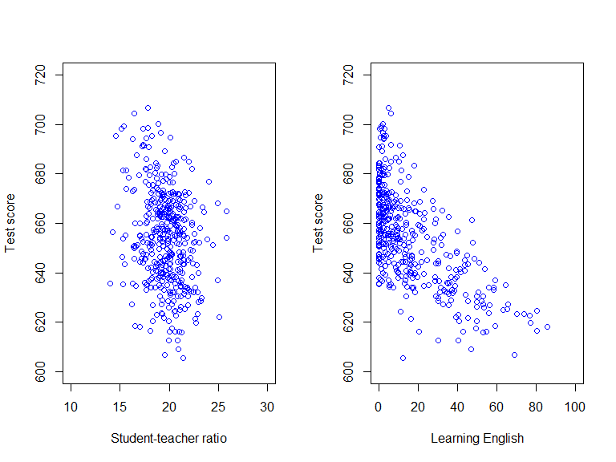
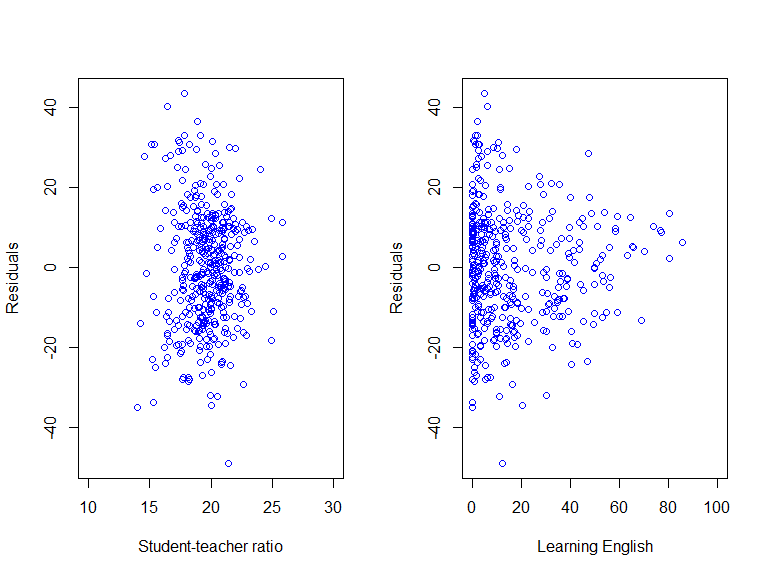

Based on Stock and Watson, ch. 6
The population regression function is the relationship between \(Y\) and \(X_1\) and \(X_2\), on average, in the population:
\[\mathrm{E}(Y|X_{1},X_{2}) = \beta_0 + \beta_1 X_{1} + \beta_2 X_{2}\]
\(\beta_1\) is the difference in predicted \(Y\) b/w observations with unit difference in \(X_1\), holding \(X_2\) constant
Let \((Y_i,X_{1i},X_{2i}; i=1,...,n)\) be a size-\(n\) random sample of \(Y\), \(X_1\) and \(X_2\); the error term is
\[u_i = Y_i - \mathrm{E}(Y_i|X_{1i},X_{2i}); \quad i=1,...,n\]
The population multiple regression model is
\[Y_i = \beta_0 + \beta_1 X_{1i} + \beta_2 X_{2i} + u_i; \quad i=1,...,n\]
OLS finds regression coefficients \(\hat{\beta}_0,\hat{\beta}_1,\hat{\beta}_2\) that puts the fitted regression plane as close to the data as possible
\[\min_{\hat{\beta}_0,\hat{\beta}_1,\hat{\beta}_2} \sum_{i=1}^n \big(\underset{ \text{residual, } \hat{u}_i }{\underbrace{Y_i - \hat{\beta}_0 - \hat{\beta}_1 X_{1i} - \hat{\beta}_2 X_{2i} }} \big)^2\]
The distance between the regression plane is measured by the sum of squared residuals
library(AER) # Load Applied Econometrics with R library
library(parameters) # Load parameters library
data(CASchools) # Load CASchools data
# Generate a couple of useful variables
CASchools$STR <- CASchools$students/CASchools$teachers # Student-teacher ratio
CASchools$Score <- (CASchools$read + CASchools$math)/2 # Student test score
# par() sets or query graphical parameters
par(mfrow=c(1,2)) # Set matrix with 1 row and 2 columns, then fill row-wise
# Plot 1 (row 1, col 1): scatter plot of Score against STR
plot(CASchools$STR,CASchools$Score,
xlab = "Student-teacher ratio", # Label x-axis
ylab = "Test score", # Label y-axis
col = "blue", # Make the data points blue
xlim = c(10, 30), # Range of x-values in plot
ylim = c(600, 720)) # Range of y-values in plot
# Plot 2 (row 1, col 2): Scatter plot of English against Score
plot(CASchools$english,CASchools$Score,
xlab = "Learning English", # Label x-axis
ylab = "Test score", # Label y-axis
col = "blue", # Make the data points blue
xlim = c(0, 100), # Range of x-values in plot
ylim = c(600, 720)) # Range of y-values in plot\[Score_i = \beta_0 + \beta_1 STR_i + \beta_2 Engl_i + u_i\]
\[Score_i = \beta_0 + \beta_1 STR_i + \beta_2 Engl_i + u_i\]
##
## Call:
## lm(formula = Score ~ STR + english, data = CASchools)
##
## Residuals:
## Min 1Q Median 3Q Max
## -48.845 -10.240 -0.308 9.815 43.461
##
## Coefficients:
## Estimate Std. Error t value Pr(>|t|)
## (Intercept) 686.03224 7.41131 92.566 < 2e-16 ***
## STR -1.10130 0.38028 -2.896 0.00398 **
## english -0.64978 0.03934 -16.516 < 2e-16 ***
## ---
## Signif. codes: 0 '***' 0.001 '**' 0.01 '*' 0.05 '.' 0.1 ' ' 1
##
## Residual standard error: 14.46 on 417 degrees of freedom
## Multiple R-squared: 0.4264, Adjusted R-squared: 0.4237
## F-statistic: 155 on 2 and 417 DF, p-value: < 2.2e-16## [1] -9.228174e-13# Check sum of residuals x STR is zero
c(sum(lm1$residuals * CASchools$STR),sum(lm1$residuals * CASchools$english)) # Print sums, put in vector using c(), to console## [1] -2.332001e-11 -1.995737e-11
# par() sets or query graphical parameters
par(mfrow=c(1,2)) # Set matrix with 1 row and 2 columns, then fill row-wise
# Plot 1 (row 1, col 1): scatter plot of residuals against STR
plot(CASchools$STR,lm1$residuals,
xlab = "Student-teacher ratio", # Label x-axis
ylab = "Residuals", # Label y-axis
col = "blue", # Make the data points blue
xlim = c(10, 30)) # Range of x-values in plot
# Plot 2 (row 1, col 2): scatter plot of residuals against english
plot(CASchools$english,lm1$residuals,
xlab = "Learning English", # Label x-axis
ylab = "Residuals", # Label y-axis
col = "blue", # Make the data points blue
xlim = c(0, 100)) # Range of x-values in plot
xlim = c(0, 100)) # Range of x-values in plot# Compute robust standard errors and print output to console
parameters(lm1, robust = TRUE, vcov_type = "HC1")## Parameter | Coefficient | SE | 95% CI | t | df | p
## ---------------------------------------------------------------------------
## (Intercept) | 686.03 | 8.73 | [668.88, 703.19] | 78.60 | 417 | < .001
## STR | -1.10 | 0.43 | [ -1.95, -0.25] | -2.54 | 417 | 0.011
## english | -0.65 | 0.03 | [ -0.71, -0.59] | -20.94 | 417 | < .001Causality means that a specific action or attribute leads to a specific, measureable consequence
Questions about causal relationships can be framed as ceteris paribus (“other things equal”) questions:
How does \(Y\) change if \(X\) is changed, holding all other factors that may affect \(Y\) constant?
Suggests an experimental approach to estimating causal effects, but experimental data rarely available
\[Y_i = \beta_0 + \beta_1 X_{1i} + \beta_2 X_{2i} + u_i; \quad i=1,\ldots,n\]
where \(\beta_1\) and \(\beta_2\) are a causal effects. The OLS estimators \(\hat{\beta}_1\) and \(\hat{\beta}_2\) are consistent estimator of \(\beta_1\) and \(\beta_2\) if
Zero conditional mean: \(\mathrm{E}(u_i|X_{1i},X_{2i}) = 0\)
\((X_{1i},X_{2i},Y_i;i=1,\ldots,n)\) is an i.i.d. sample
\(X_{1i}\) and \(X_{2i}\) and \(Y_i\) have nonzero finite 4th moments
There is no perfect multicollinearity
\[\mathrm{E}(u_i|X_{1i},X_{2i}) = 0\]
Different \(X_{\ell i}\)-values not associated w/ systematic changes in mean \(u_i\): \(X_{\ell i}\) is as-if randomly assigned, for \(\ell=1,2\)
Zero conditional mean implies zero covariance:
\[\mathrm{E}(u_i|X_{1i},X_{2i}) = 0 \Rightarrow \mathrm{Cov}(u_i,X_{\ell i}) = 0, \quad \ell=1,2\]
Consistent estimation requires \(\mathrm{E}(u_i|X_{1i},X_{2i}) = 0\), implying zero covariance between error and regressors in the population from which the sample is drawn.
The OLS estimator imposes \(\sum_{i=1}^n \hat{u}_i X_{\ell i} = 0\) for \(\ell = 1,2\), which implies zero covariance between residuals and regressors in the sample
The residuals are the sample counterpart to the population errors. If errors and regressors are correlated in the population, we should use an estimator that allows for residuals and regressors to be correlated in the sample
\[Y_i = \beta_0 + \beta_1 X_i + u_i; \quad i = 1,\ldots,n\]
Omitted variable bias is the bias in the OLS estimator of the causal effect of \(X\) on \(Y\) that arises when the regressor \(X\) is correlated with an omitted variable
Omitted variable bias arises when two conditions are met:
\(X\) is correlated with the omitted variable
The omitted variable is a determinant of \(Y\)
If the omitted variable, which is contained in the error term \(u\), correlates with the included \(X\),
\[\mathrm{E}(u|X) \neq 0\]
Omitted variables violate the least squares assumptions for causal inference: OLS estimator biased, inconsistent
\[\hat{\beta}_1 \overset{p}{\rightarrow} \beta_1 + \rho_{Xu}\frac{\sigma_u}{\sigma_X}\]
# Estimate simple linear regression Score = b0 + b1*STR + u by OLS
lm2 <- lm(Score ~ STR, data = CASchools) # Assign regression output to lm2
# Compute robust standard errors and print output to console
parameters(lm2, robust = TRUE, vcov_type = "HC1")## Parameter | Coefficient | SE | 95% CI | t | df | p
## ---------------------------------------------------------------------------
## (Intercept) | 698.93 | 10.36 | [678.56, 719.31] | 67.44 | 418 | < .001
## STR | -2.28 | 0.52 | [ -3.30, -1.26] | -4.39 | 418 | < .001The omitted variable problem arise because an excluded determinant of \(Y\) correlates with \(X\)
Solution: estimate the effect of \(X\) on \(Y\) holding the omitted variable constant
Holding the omitted variable constant works because constant variables cannot correlate with other variables
Multiple regression analysis is a convenient way to addresses omitted variable bias when the omitted variable is observed, and can be included in the analysis
Interested in the causal effect of a subset of regressors: distinguish b/w variables of interest and control variables
A control variable is included only to avoid omitted variable bias to the estimated causal effect of interest
We don’t care if the estimated coefficients on the control variables are biased estimates of their causal effects
\[Y_i = \beta_0 + \beta_1 X_{i}+ \beta_{2} W_{i} + u_i; \quad i=1,\ldots,n\]
where \(\beta_1\) is a causal effect, \(W\) is a control variable. The OLS estimator \(\hat{\beta}_1\) is a consistent estimator of \(\beta_1\) if
\[\mathrm{E}(u_i|X_{i},W_{i}) = \mathrm{E}(u_i|W_{i})\]
\((X_{i},W_{i},Y_i;i=1,\ldots,n)\) is an i.i.d. sample
\(X_i\), \(W_i\) and \(Y_i\) have nonzero finite 4th moments
There is no perfect multicollinearity
\[\mathrm{E}(u_i|X_{i},W_{i}) = \mathrm{E}(u_i|W_{i})\]
In general, the control variable \(W_i\) is correlated with \(u_i\); that is, \(\mathrm{E}(u_i|W_i) \neq 0\)
Under conditional mean independence, \(X_i\) is as-if randomly assigned for observations w/ same \(W_i\)-value.
Then, \(\hat{\beta}_1\) is a consistent estimator of the causal effect on \(Y\) of \(X\), namely of \(\beta_1\)
Failure to account for “outside learning opportunities” is a potential omitted variable bias in estimating the causal effect of student-teacher ratios on test scores
Outside learning opportunities likely correlated with economic background; therefore, consider
\[\begin{multline*} Score_i = \beta_0 + \beta_1 STR_i \\ + \beta_2 PctEL_i + \beta_3 LchPct_i + u_i \end{multline*}\]
where \(LchPct_i\) is share of economically disadvantaged children (receiving subsidized lunch) in district \(i\)
The control variable \(LchPct_i\) is correlated with “outside learning opportunities”, and therefore \(u_i\):
\[\mathrm{E}(u_i|STR_i,PctEL_i,LchPct_i) \neq 0\]
Conditional mean independence
\[\begin{multline*} \mathrm{E}(u_i|STR_i,PctEL_i,LchPct_i) \\ = \mathrm{E}(u_i|PctEL_i,LchPct_i) \end{multline*}\]
says that \(STR\) is as-if randomly assigned among districts with the same \(PctEL_i\)- and \(LchPct_i\)-values
# Compute robust standard errors and print output to console
parameters(lm1, robust = TRUE, vcov_type = "HC1")
# Use lm() to estimate Score = b0 + b1*STR + b2*english + b3*lunch + u by OLS;
# and assign output to lm3
lm3 <- lm(Score ~ STR + english + lunch, data = CASchools)
# Compute robust standard errors and print output to console
parameters(lm3, robust = TRUE, vcov_type = "HC1")## Parameter | Coefficient | SE | 95% CI | t | df | p
## ---------------------------------------------------------------------------
## (Intercept) | 686.03 | 8.73 | [668.88, 703.19] | 78.60 | 417 | < .001
## STR | -1.10 | 0.43 | [ -1.95, -0.25] | -2.54 | 417 | 0.011
## english | -0.65 | 0.03 | [ -0.71, -0.59] | -20.94 | 417 | < .001## Parameter | Coefficient | SE | 95% CI | t | df | p
## ---------------------------------------------------------------------------
## (Intercept) | 700.15 | 5.57 | [689.20, 711.10] | 125.74 | 416 | < .001
## STR | -1.00 | 0.27 | [ -1.53, -0.47] | -3.70 | 416 | < .001
## english | -0.12 | 0.03 | [ -0.19, -0.06] | -3.70 | 416 | < .001
## lunch | -0.55 | 0.02 | [ -0.59, -0.50] | -22.70 | 416 | < .001Omitted variable bias in a regression occurs when an omitted regressor (i) correlates with an included regressor, and (ii) is a determinant of the dependent variable
Omitted variables violate the zero conditional mean assumption/conditional mean independence assumptions: pose a problem for OLS estimation of causal effects
The multiple regression is one way to deal with the omitted variable problem, but requires that the omitted variable is observed, and can be included in the analysis